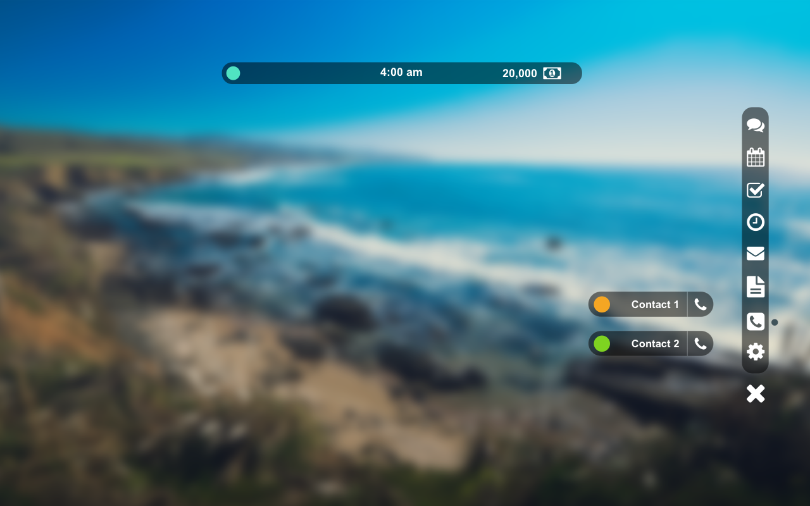
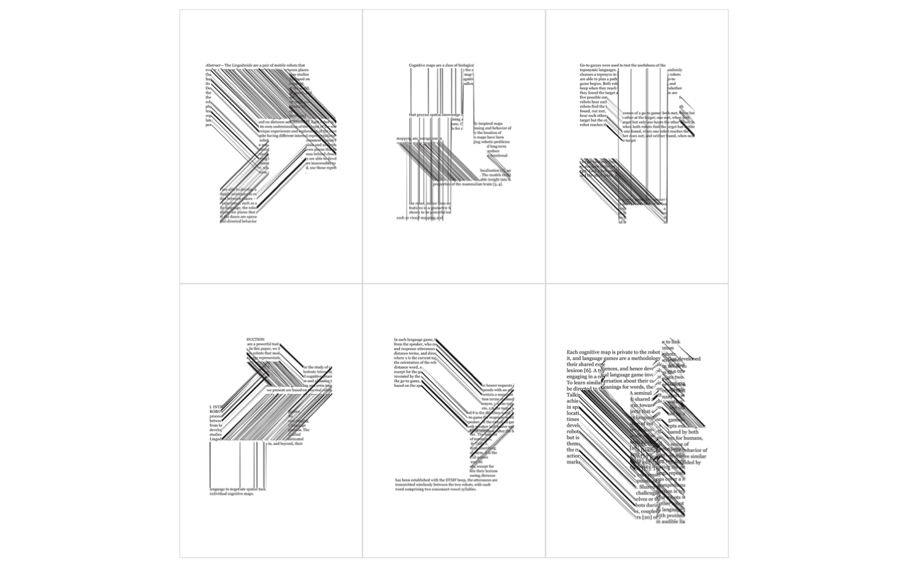

James Hillmann
Graphic Developer
James Hillmann is a Front End Web Developer / Motion Designer. He is an alumni of of Montserrat College of Art where he graduated with a BFA in Graphic Design. Through his experience there he received rewards such as typography merit awards, web merit awards and a scholarship for his drawing skills. He has a year of in-house design experience along with a handful of client design experience. His favorite programs to work with are Sketch, Illustrator, Brackets, and After Effects. Currently he is situated in Springfield MA and when he is not creating he subscribes to nutrition and fitness hobbies. Feel free to contact James just to say hello or for hire.